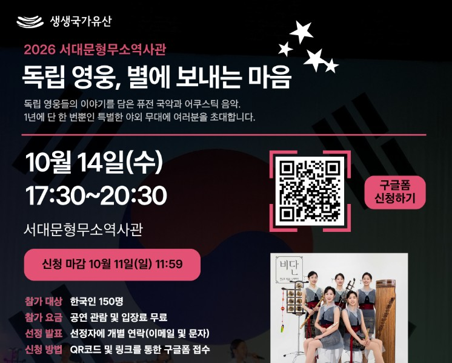

50호 | 2026년 10월 1일 발행
📌 이번 호 주요 목차
 우리동네 국회의원 이광재
우리동네 국회의원 이광재
📝 현장일지
이광재, "경기도당과 함께, 새 지방정부의 첫 예산을 챙기겠습니다"… 민주당 경기도 시장·군수 예산정책 간담회
더불어민주당 경기도 시장·군수들이 한자리에 모였습니다. 이광재 의원은 경기 지역구 의원인 만큼 말씀 하나하나가 무겁게 다가왔고 각별하게 챙기겠다고 다짐했습니다. 지방정부가 많이 어려운 상황에서, 경기도의 어려움은 '불교부단체'라는 말만으로 설명되지 않는다며 상수원보호구역, 그린벨트, 군사시설보호구역 등 오랫동안 감당해 온 부담을 짚었습니다. 매칭 부담만 늘리는 지원이 아니라 지자체가 실제로 쓸 수 있는 예산이 필요하고, 서울·경기·인천이 하나의 생활권이 된 만큼 광역교통 예산도 더 이상 미룰 수 없다고 강조했습니다. 국회 예결위원장으로서 시장·군수들과 함께 힘을 보태겠다고 밝혔습니다.
📌 출처: 이광재 공식 네이버 블로그
📰 언론보도
[뉴데일리] 민주당 경기도당, 시장 19명 국회 집결… 이광재예결위원장 "예산 심의 마지막 날까지 함께 뛰겠다"
더불어민주당 경기도당이 도내 민주당 소속 시장 19명과 함께 국회를 찾아 2027년도 국비 확보를 위한 예산정책 간담회를 열었습니다. 30일 국회 의원회관에서 열린 '경기도당 기초단체장 예산정책 간담회'에는 서영석 경기도당위원장과 이광재 국회 예산결산특별위원장, 염태영 참좋은지방정부위원장, 최대호 경기도시장군수협의회장(안양시장) 등이 참석했습니다. 지방선거와 전당대회 이후 경기도당위원장과 도내 민주당 소속 기초단체장이 처음 한자리에 모인 자리로, 민선 9기 출범 이후 각 시의 재정 여건과 주요 현안을 공유했습니다. 이광재 예결위원장은 "새로 당선된 단체장들이 취임 직후 정부 예산안이 확정되면서 자신의 비전을 내년도 예산에 충분히 담지 못한 부분이 있다"며 "이번 국회 예산 심의 과정에서 확보하는 내년 예산이 각별히 중요하다"고 말했습니다. 이어 "11월까지 각 시의 건의사항을 접수해 당내에서 검토하고 정부와 협의하겠다"며 "예산 심의가 끝나는 마지막 날까지 함께 뛰겠다"고 덧붙였습니다. 간담회에 앞서 경기도당은 '2027년 100대 국비 건의서'를 이광재 예결위원장에게 전달했습니다.
📌 출처: 뉴데일리 (김현우 기자)
📰 하남 지역 주요 뉴스
📰 교육/보육
강성삼 경기도의원 "유보통합, 아이·학부모·교사가 변화 체감해야"… 하남서 영유아 교육·보육 정책토론회
유치원과 어린이집으로 나뉜 교육·보육 체계를 통합하는 유보통합이 현장에 자리 잡으려면 경기도의 지역별 여건과 영유아의 연령·돌봄 특성을 반영한 별도의 지원체계가 필요하다는 의견이 나왔습니다. 강성삼 경기도의원이 좌장을 맡은 '유보통합 시대, 경기도 영유아 교육·보육 통합지원체계 구축 방안' 정책토론회가 29일 하남가족어울림센터 대회의실에서 열렸습니다. 토론에서는 재정과 교직원 처우, 영아·취약계층 지원, 지역별 지원체계 등이 주요 과제로 논의됐고, 4개 권역별 특화 교육과정 운영과 '경기형 표준 교육·보육비용' 산정, 교사 대 영유아 비율 개선, 학부모가 정보를 한 곳에서 확인하는 원스톱 안내체계 마련 등이 제안됐습니다. 강성삼 의원은 "유보통합은 단순히 행정체계를 하나로 합치는 데 그쳐서는 안 되며, 아이와 학부모, 교사가 현장에서 실질적인 변화를 체감할 수 있는 방향으로 추진되어야 한다"고 강조했습니다.
📌 출처: 경인매일 (최승곤 기자)
📰 시정/재정
"허리띠 더 졸라맨다"… 하남시, 내년 본예산 지출 구조조정 돌입
2027년도 본예산을 준비하는 하남시가 대대적인 지출 구조조정에 들어갔습니다. 각 부서가 낸 내년도 세출 예산 추계가 세입 전망보다 13.1%(1,272억 원) 많아 모든 부서에 예산 절감 지침을 내리고 사업 전반을 다시 살펴보기로 했습니다. 시 자체 세입 증가세가 둔화된 데다 경기도의 재정 비상선언 이후 도비 지원 비율이 줄었고, 대규모 투자사업 운영비와 공약·현안 사업, 복지 지출까지 늘어난 것이 원인입니다. 시는 비슷하거나 중복되는 사업을 통폐합하고, 법정·의무 경비를 뺀 신규 사업과 기존 사업 증액은 원칙적으로 반영하지 않기로 했습니다. 한편 고액·상습 체납자 체납 처분과 법인 세무조사를 강화하고 유휴 공유재산을 활용해 세입을 늘리며, 취약계층 필수 민생 지원은 최대한 유지합니다. 이현재 하남시장은 "세입 대비 세출이 1,200억 원 이상 더 많은 엄중한 상황인 만큼 모든 부서가 비상한 각오로 예산을 짜야 한다"고 강조했습니다.
📌 출처: 아시아투데이 (박준성 기자)
📰 하남교산/도시개발
GH, 하남교산을 3기 신도시 '패스트트랙' 선도지구로… A1블록 모듈러·A8블록 수열에너지 아파트 추진
경기주택도시공사(GH)가 30일 서울 코엑스에서 개막한 '집코노미 박람회 2026'에서 하남교산을 중심으로 한 3기 신도시 조기 공급 방안을 소개했습니다. 공정을 병행하고 기존 기반시설과 모듈러 공법 등을 활용해 공급 시기를 12~18개월 앞당기는 'GH형 패스트트랙'을 하남교산을 선도지구로 지정해 가동하고 있습니다. 하남교산 A1블록에는 국토교통부 실증사업으로 공장에서 구조물을 미리 제작해 현장에서 조립하는 프리캐스트 콘크리트(PC) 공법의 모듈러 아파트가 조성되고 있고, A8블록에는 상수도의 계절별 온도 차를 활용하는 '수열에너지 아파트'가 들어섭니다. GH는 2032년 준공 시 에어컨 약 1,000대를 대체할 에너지를 공급할 것으로 예상합니다. 하남교산과 남양주왕숙2에는 학교와 지역사회가 시설을 함께 이용하는 학교복합시설도 도입됩니다.
📌 출처: 한국경제 (정의진 기자)
💬 하남 맘카페 HOT 이슈
이번 주 하남 지역 맘카페(미사맘스클럽, 하남맘, 정다운 감일맘, 교산우리동네, 미사교산4050 등)에서 많이 오르내린 HOT 이슈 TOP 3입니다.
1️⃣ [산후조리·안전] "출산 앞두고 불안해요"… 미사 연세아란산부인과 화재 후 입원실·조리원 이용 문의 잇따라
현황: 하남미사연세아란산부인과 카페에는 이번 병원 내 화재(8층 세탁실 건조기에서 시작된 것으로 파악)와 관련해 병원 측이 산모와 보호자, 지역 주민에게 사과하고 산모·아기 안전을 끝까지 책임지겠다는 입장을 밝힌 글이 올라왔습니다. 미사맘스클럽에는 "입원실과 조리원은 현재 이용이 어렵고 10월 중순이나 돼야 가능하다고 들었는데 복구 상황을 알 수 없다"며 10월 초·중순 출산 예정이라는 글이, 연세아란 카페에는 "신생아가 있는 공간인데 화재 후 냄새와 조리원 운영은 어떻게 되느냐"는 질문이 올라왔습니다. 외래진료는 별도 공지가 나간 상태입니다.
💡 주민 포인트: 출산 예정일이 가까운 분은 병원 공지만 기다리지 말고 분만·조리원 이용 가능 여부와 재개 시점을 병원에 직접 전화로 확인하고, 만일에 대비해 대체 병원과 조리원도 미리 알아 두세요. 운영 재개 시점은 카페 글에서 전해진 내용이므로 병원의 공식 안내를 기준으로 확인하는 것이 안전합니다.
💬 주민 반응: "복구 상황이라도 자세히 알려 달라"는 요청과 함께, 출산을 앞둔 예비맘들의 걱정 섞인 댓글이 이어졌습니다.
📌 출처: 네이버 카페 (하남미사연세아란산부인과, 미사강변도시 미사맘스클럽)
2️⃣ [교육·입시] "미사4고(가칭 청아고) 개교 앞두고 고교 선택 고민"… 설명회·배정 정보에 관심 집중
현황: 미사교산4050 카페에는 (가칭) 미사4고(청아고) 관련 문의에 광주하남교육지원청이 답변한 내용을 정리한 글이 올라왔습니다. 개교 준비 업무는 설립사무취급교인 풍산고등학교에서 맡고 있고, 입학 관련 학교 설명회는 10월 중 풍산고에서 열릴 예정이며 자세한 안내는 풍산고 홈페이지에서 확인할 수 있다는 내용입니다. 신설학교는 개교 전 교육공동체가 구성되지 않아 교복 등 운영 사항을 사전에 확정하기 어렵다는 답변도 공유됐습니다. 미사맘스클럽에서는 하남·미사 고교 정원 감축과 청아고 개교로 달라질 미사 학군을 짚은 글이, 미사교산4050에서는 "미강중·은가람중에서도 청아고를 지원하느냐", "풍산고는 야자·석식이 있느냐"는 질문이 이어졌습니다.
💡 주민 포인트: 하남은 고교 비평준화 지역이라 지망 순위에 따라 우선 배정된다는 설명이 카페 글에 공유됐습니다. 중3 학부모는 10월 중 열리는 풍산고 설명회 일정을 학교 홈페이지에서 미리 확인하고, 지망·배정 방식은 광주하남교육지원청의 공식 안내로 확인하세요.
💬 주민 반응: 거리와 학교별 분위기, 야간자율학습·석식 여부를 묻는 글에 "직접 설명회에서 확인하는 게 제일"이라는 조언이 많았습니다.
📌 출처: 네이버 카페 (미사교산4050, 미사강변도시 미사맘스클럽)
3️⃣ [건강·육아] "독감 접종해야 하는데 접수가 너무 어려워요"… 쌀쌀해진 날씨에 소아과 대기 고민
현황: 정다운 감일맘에는 "지난주부터 오후 3시 전에 접수가 마감되는 것 같다. 독감 접종을 해야 하는데 2시부터 대기해야 하느냐"는 글이 올라왔고, 교산우리동네에는 "밤에 열이 나서 아침 일찍 갔는데도 대기가 40명이었다"며 "입주민은 늘어나는데 소아과가 하나만 더 생기면 좋겠다"는 글이 올라왔습니다. 아침저녁으로 쌀쌀해지며 콧물 감기를 걱정하는 글, 독감 A형과 B형의 차이와 접종이 중요한 이유를 소개하는 글도 눈에 띄었습니다. 연세아란소아과는 10월 3일·5일·9일 휴진과 원장님 진료 변동 일정을 공지했습니다.
💡 주민 포인트: 아이 독감 접종은 병원마다 접수 마감과 예약 방식이 달라, 방문 전에 전화나 앱으로 확인하는 것이 좋습니다. 10월에는 공휴일이 이어지니 다니는 소아과의 휴진 일정도 미리 챙겨 두세요.
💬 주민 반응: "우리 동네도 똑같다"는 공감과 함께, 접수 요령과 덜 붐비는 시간대를 나누는 댓글이 이어졌습니다.
📌 출처: 네이버 카페 (정다운 감일맘, 교산우리동네, 하남미사연세아란산부인과)
🎭 ALL IN 하남라이프
2026년 10월 1일 기준 한눈에 보는 하남시 최신 문화·행사·교육 안내 가이드
🎶 2026.10.14(수) 17:30 | 무료 야외 공연
[서대문형무소역사관] 「독립 영웅, 별에 보내는 마음」 야외 음악공연
"1년에 단 한 번, 150명만 함께하는 특별한 야외 무대"
독립 영웅들의 이야기를 담은 퓨전 국악과 어쿠스틱 음악 공연입니다. 국가유산청 생생국가유산 사업 '서대문형무소, 기억의 문을 열다'의 일환으로 열립니다.
🗓 일시: 2026년 10월 14일(수) 17:30 ~ 20:30
📍 장소: 서대문형무소역사관 태극기 잔디광장 (3호선 독립문역 5번 출구 도보 1분)
🎤 출연: 퓨전국악그룹 '비단', 어쿠스틱 밴드 '긴밤(만쥬)'
👥 대상: 한국인 150명 (1회 최대 8인까지 신청 가능) / 관람료·입장료 무료
📝 신청: 구글폼 접수 — 포스터에는 10월 11일(일) 11:59 마감, 구글폼 안내에는 10월 12일(월) 23:59까지로 표기되어 있어 서둘러 신청하세요. 선정자에게 개별 연락(문자·이메일)
🧺 참고: 야외 공연이라 돗자리를 권장하며, 우천 시 일정이 변동될 수 있습니다.
독립 영웅들의 이야기를 담은 퓨전 국악과 어쿠스틱 음악 공연입니다. 국가유산청 생생국가유산 사업 '서대문형무소, 기억의 문을 열다'의 일환으로 열립니다.
🗓 일시: 2026년 10월 14일(수) 17:30 ~ 20:30
📍 장소: 서대문형무소역사관 태극기 잔디광장 (3호선 독립문역 5번 출구 도보 1분)
🎤 출연: 퓨전국악그룹 '비단', 어쿠스틱 밴드 '긴밤(만쥬)'
👥 대상: 한국인 150명 (1회 최대 8인까지 신청 가능) / 관람료·입장료 무료
📝 신청: 구글폼 접수 — 포스터에는 10월 11일(일) 11:59 마감, 구글폼 안내에는 10월 12일(월) 23:59까지로 표기되어 있어 서둘러 신청하세요. 선정자에게 개별 연락(문자·이메일)
🧺 참고: 야외 공연이라 돗자리를 권장하며, 우천 시 일정이 변동될 수 있습니다.

📌 출처: 서대문형무소역사관 (구글폼 신청 안내)
💞 2026.10.24(토) 13:00 | 부부 교육
2026년 부부역할지원사업 「부부의사소통교육」 (하남시가족센터)
"부부 대화법부터 샌드위치 도시락 만들기까지"
효과적인 의사소통 방법을 배우고, 봄인형 교구로 갈등을 이해하고 해결하는 방법을 익힌 뒤 부부 요리교실로 마무리하는 3회기 프로그램입니다.
🗓 일시: 2026년 10월 24일(토) 1회기 13:00~14:00 · 2회기 14:00~15:00 · 3회기 15:00~16:00
📍 장소: 하남시 가족센터 (신장동로 15 하남시가족어울림센터 1층 신장공동육아나눔터 프로그램실)
👥 대상: 하남시 거주 12가족 (예비부부 및 결혼 3년 이내 신혼부부 우선)
📝 접수: 9월 28일(월) 10:00부터 모집 시까지 선착순, 하남시 가족센터 홈페이지 (참여자 모두 개별 회원가입 후 가족연결, 가족 구성원 모두 신청해야 접수 완료)
ℹ️ 유의: 3회기(샌드위치 도시락 만들기)는 1·2회기 참여자만 가능하고, 1·2회기는 부부만, 3회기는 가족 전체가 함께 참여할 수 있습니다.
☎️ 문의: 감일 공동육아나눔터 02-470-2993
효과적인 의사소통 방법을 배우고, 봄인형 교구로 갈등을 이해하고 해결하는 방법을 익힌 뒤 부부 요리교실로 마무리하는 3회기 프로그램입니다.
🗓 일시: 2026년 10월 24일(토) 1회기 13:00~14:00 · 2회기 14:00~15:00 · 3회기 15:00~16:00
📍 장소: 하남시 가족센터 (신장동로 15 하남시가족어울림센터 1층 신장공동육아나눔터 프로그램실)
👥 대상: 하남시 거주 12가족 (예비부부 및 결혼 3년 이내 신혼부부 우선)
📝 접수: 9월 28일(월) 10:00부터 모집 시까지 선착순, 하남시 가족센터 홈페이지 (참여자 모두 개별 회원가입 후 가족연결, 가족 구성원 모두 신청해야 접수 완료)
ℹ️ 유의: 3회기(샌드위치 도시락 만들기)는 1·2회기 참여자만 가능하고, 1·2회기는 부부만, 3회기는 가족 전체가 함께 참여할 수 있습니다.
☎️ 문의: 감일 공동육아나눔터 02-470-2993
📌 출처: 하남시가족센터
🏛️ 공공기관 소식지
2026년 10월 1일 기준 하남시 공공기관 주요 공고·신청 안내입니다.
💳 하남시 지역경제과 | 지역사랑상품권
2026년 10월 지역사랑상품권(하머니) 할인 안내
"10월 한 달, 하머니 8% 할인 충전하세요"
2026년 10월 지역사랑상품권(하머니) 인센티브 혜택을 안내합니다. 예산이 소진되면 자동 종료되니 서둘러 충전하세요.
🗓 발행기간: 2026년 10월 1일(목) ~ 10월 31일(토) (예산 소진 시 자동 종료)
💰 할인율: 8%
💳 충전한도: 20만 원 (한도를 초과해 충전하면 할인 혜택이 적용되지 않습니다)
🧾 소득공제: '직불카드' 항목으로 30% 소득공제 가능 (신청 전 사용액은 소급 적용 불가)
ℹ️ 유의: 인센티브 지급 종료 이후 충전해 할인을 받지 못했다면 사용 전에 '경기지역화폐 > 내 지갑 > 충전잔액 > 충전취소'를 확인하세요.
🏪 가맹점 조회: 경기지역화폐 앱 > 단골가게 > 경기지역화폐 결제 매장 찾기 / 하남시청 홈페이지 > 지역사랑상품권 하머니 > 하머니 알림판 > 가맹점 조회
📞 문의: 하남시 지역경제과 상권지원팀 031-790-6034
2026년 10월 지역사랑상품권(하머니) 인센티브 혜택을 안내합니다. 예산이 소진되면 자동 종료되니 서둘러 충전하세요.
🗓 발행기간: 2026년 10월 1일(목) ~ 10월 31일(토) (예산 소진 시 자동 종료)
💰 할인율: 8%
💳 충전한도: 20만 원 (한도를 초과해 충전하면 할인 혜택이 적용되지 않습니다)
🧾 소득공제: '직불카드' 항목으로 30% 소득공제 가능 (신청 전 사용액은 소급 적용 불가)
ℹ️ 유의: 인센티브 지급 종료 이후 충전해 할인을 받지 못했다면 사용 전에 '경기지역화폐 > 내 지갑 > 충전잔액 > 충전취소'를 확인하세요.
🏪 가맹점 조회: 경기지역화폐 앱 > 단골가게 > 경기지역화폐 결제 매장 찾기 / 하남시청 홈페이지 > 지역사랑상품권 하머니 > 하머니 알림판 > 가맹점 조회
📞 문의: 하남시 지역경제과 상권지원팀 031-790-6034
📌 출처: 하남시청 (지역경제과)
© 2026 우리동네 진짜일꾼 이광재